Christian Lawson-Perfect, Newcastle University
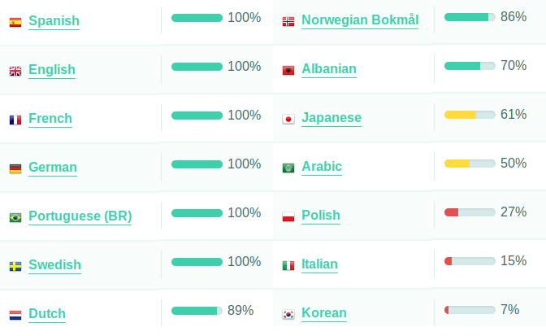
Arve Seljebu, Axel Hederstedt, Benon Paloka, Carolijn Tacken, Daniele Passalacqua, Faisal al-Malki, Florent Cayré, Frank Podborski, Helge Münnich, Hugo Ribeiro, José Klenner, Julio Mosquera, Lionel F., Marlon Arcila, Michele Passante, Moafak Mkhallalati, Pascal Renauld, Pedro A. García-Sánchez, Ricardo Monge, S. Y. Lee, Takahiro Nakahara, Tore Gaupseth, Welton Vaz, Yasuyuki Nakamura
CodeChristian Lawson-Perfect, Bill Foster, Anthony Youd, Chris Graham, Stacey Aston, George Stagg, Helen Ashton, Dave Gabrielson, Gerlou Shyy, Jake Steele, Mohit Jayanti Gurumukhani, James Ndegwa Maringa, Anbarasi U, Kaustubh Mallik, VSN Reddy Janga, Pablo Roldan, Mohit Jayanti Gurumukhani
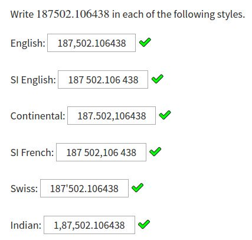
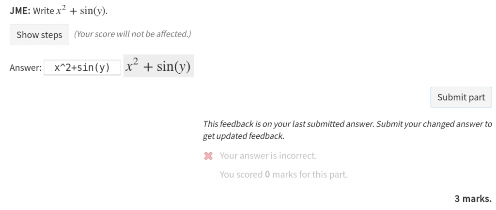
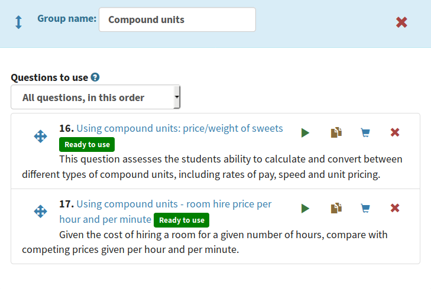
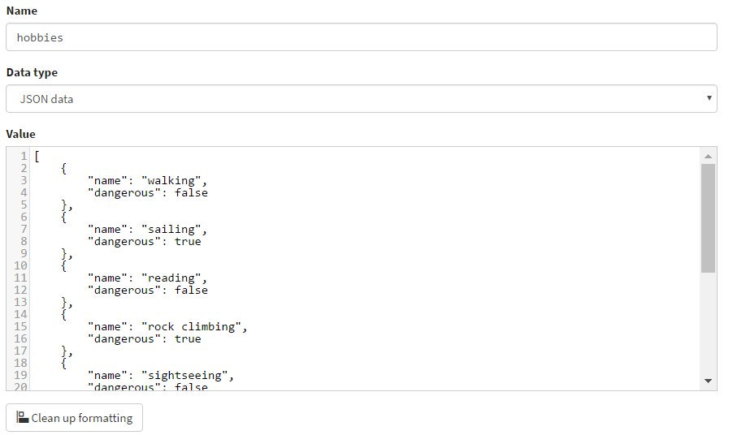
Extension which provides functions to generate random names and associated pronouns
{name} puts {their} things where {they} like{s}.
When people show things to {them},
{they} want{s} them for {themself}.
Zak puts his things where he likes. When people show things to him, he wants them for himself.
Extension which provides functions to generate random names and associated pronouns
{name} puts {their} things where {they} like{s}.
When people show things to {them},
{they} want{s} them for {themself}.
Eabha puts her things where she likes. When people show things to her, she wants them for herself.
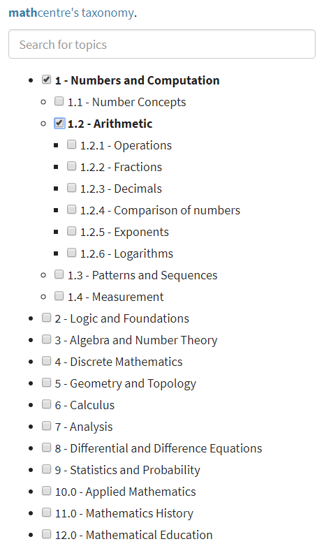
SCORM is unloved by VLEs.
Most VLEs support LTI now.
We can add more Numbas-specific features.
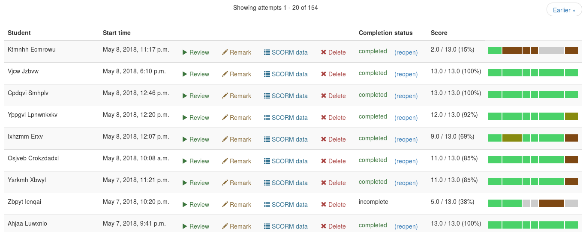
Used at Newcastle for all Numbas assessment for two years.
Instructions:
Complete rewrite of marking algorithms.
All in JME, easier to understand than JavaScript.
Feedback is constructed in stages, from notes that work like question variables.
...
valid_numbers:
if(all(map(not isnan(parsenumber(x,"en")),x,bits)),
true,
let(wrong,filter(isnan(parsenumber(x,"en")),x,bits)[0],
warn(wrong+" is not a valid number");
fail(wrong+" is not a valid number.")
)
)
no_extras:
if(all(map(x in expected_numbers, x, interpreted_answer)),
true
,
let(extra,filter(not (x in expected_numbers),x,interpreted_answer)[0],
incorrect(extra+" is not in the list.");
)
false
)
mark:
if(studentanswer="",fail("You have not entered an answer"),false);
apply(valid_numbers);
apply(included);
apply(no_extras);
correctif(all_included and no_extras)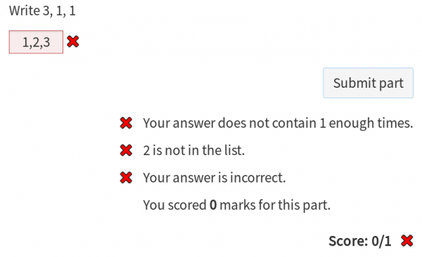
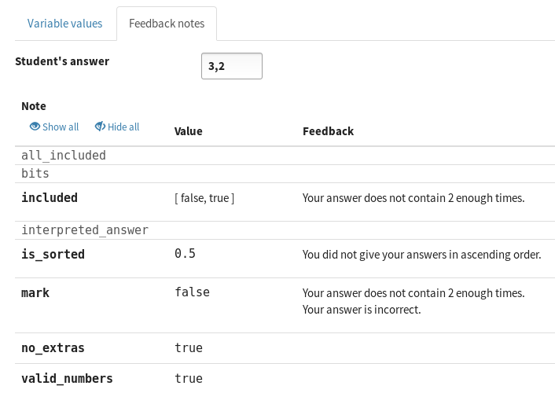
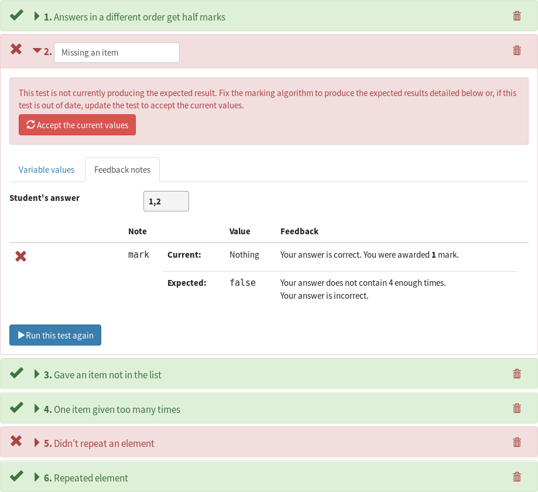
Aim: Make marking algorithms reusable and easily configured.
Combination of input widget, settings, and marking algorithm.
For question authors, they appear like the built-in part types.
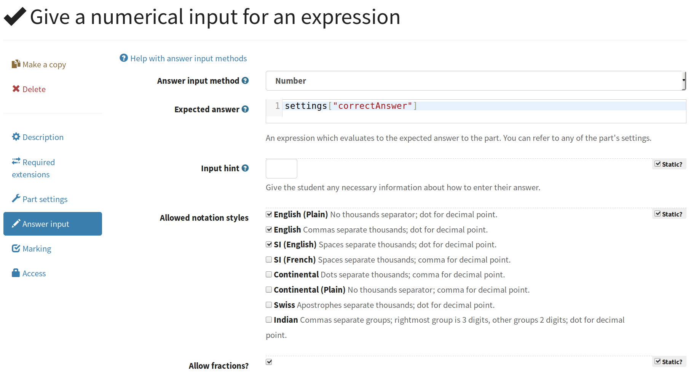
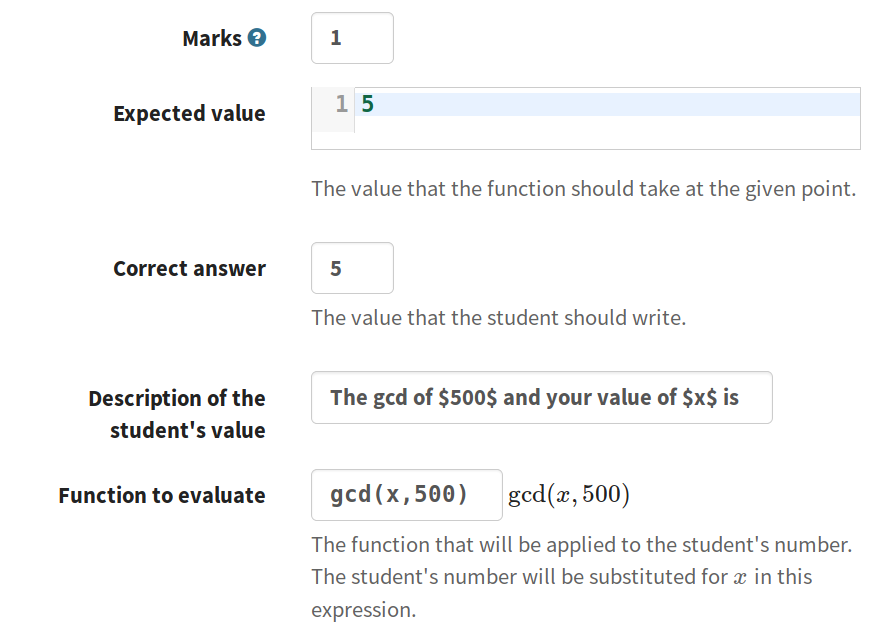
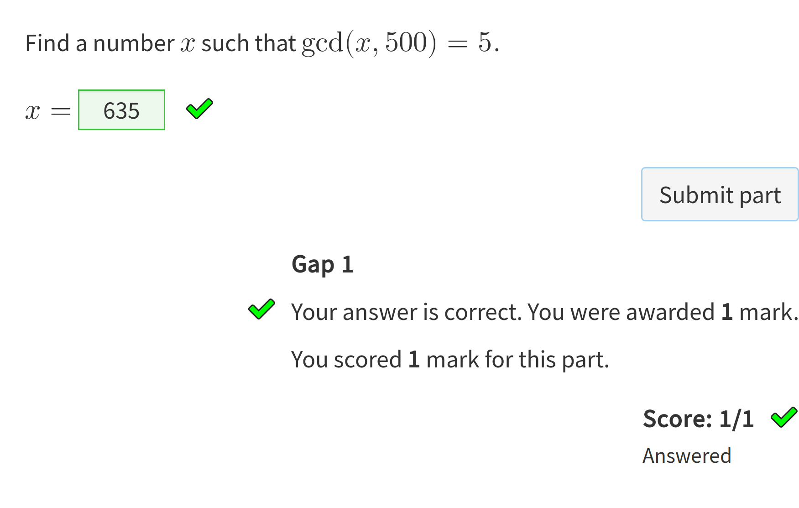
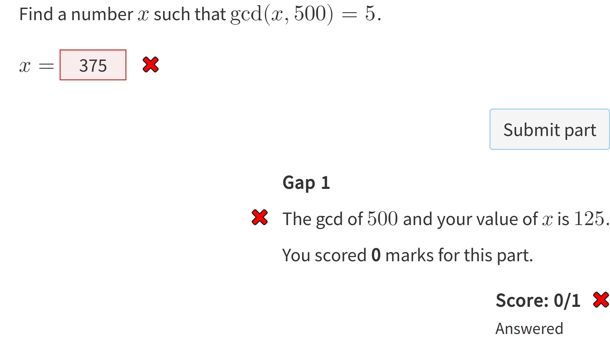
Now lives at
As ever, more things than I have time to do.
Runtime: 74 open issues, 43 "wishlist", 9 "good first issue".
Editor: 39 open issues, 14 "wishlist", 5 "good first issue".
Help is very welcome!